P
AI Bookkeeping untuk Firma Akuntansi
Manual Book Praktis
Panduan penggunaan modul — dari klien baru sampai laporan & SPT
Versi 1.0 · Agustus 2026
Mencakup: Dashboard · Klien & COA Industri · Import Kertas Kerja · Subledger & Aging · Laporan (Ikhtisar, Matrix 12 Bulan, Ekuitas, Pembulatan) · SPT 1771 · Antrian Kerja
Isi
Daftar Isi
- Pendahuluan & Alur Kerja
- Login & Dashboard Workspace
- Manajemen Klien & Industri
- COA Template per Industri
- Import Kertas Kerja Excel
- Subledger & Aging Piutang
- Laporan — Ikhtisar (Tahunan/Bulanan)
- Laporan — Matrix 12 Bulan
- Laporan — Laba Rugi, Neraca, Ekuitas
- Pembulatan Laporan (Rounding)
- SPT 1771 & Koreksi Fiskal
- Antrian Kerja & Filter Klien
- Tips, Batasan & Referensi
Manual ini disusun berdasarkan aplikasi versi produksi lokal (localhost:3000) dengan data demo klien ARYA USAHA TIRTA, CV hasil import kertas kerja ASC_2026.
Bagian 1
Pendahuluan & Alur Kerja
Praktis adalah platform AI bookkeeping untuk firma akuntansi. Dokumen klien masuk, AI menyusun draft jurnal, tim Anda mereview dalam 4 lapis (Junior → Senior → Tax → Partner), dan laporan keuangan ter-generate otomatis dari jurnal yang disetujui.
Alur Kerja Inti
| Tahap | Aktivitas | Modul |
|---|
| 1 | Buat klien + pilih industri → COA otomatis terpasang | Klien & Industri |
| 2 | Migrasi data lama (opsional): import kertas kerja Excel | Import Wizard |
| 3 | Dokumen diproses AI → draft jurnal → review | Pipeline & Queues |
| 4 | Subledger & aging dipantau per klien | Subledger |
| 5 | Laporan disusun: ikhtisar, matrix, SPT, ekuitas | Laporan Keuangan |
| 6 | Export CSV / PDF untuk penyampaian ke klien | Laporan & Portal |
Catatan konsep: Trial balance Praktis bersifat per periode (bukan akumulasi). Saat membuka laporan, pilih periode yang memuat data (mis. 2026-01 untuk data demo ARYA).
Bagian 2
Login & Dashboard Workspace
Login
- Buka alamat aplikasi (mis.
http://localhost:3000).
- Masukkan email & password akun yang diberikan administrator firma.
- Klik Masuk — Anda diarahkan ke dashboard.
Akun demo: admin@ledgerline.dev / password123 (hanya untuk lingkungan demo).
Dashboard Workspace (Dockable)
Dashboard terdiri dari panel-panel yang bisa diatur bebas (drag & drop): KPI, Pipeline, SLA, Kualitas, dan lainnya.
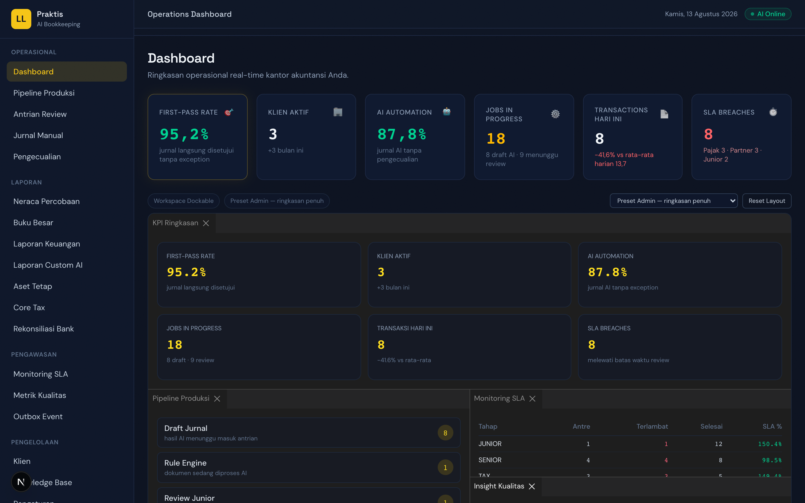
Gambar 1 · Dashboard workspace — panel bisa di-drag, di-resize, dan disusun ulang.
- Susun panel sesuai preferensi dengan menyeret tab panel.
- Layout tersimpan otomatis per pengguna — saat login lagi, tata letak Anda tetap.
- Gunakan preset per peran (mis. layout Senior vs Junior) dari switcher di pojok dashboard.
- Klik tombol Reset untuk kembali ke layout default bila berantakan.
Panel kartu KPI bisa diklik untuk membuka halaman modul terkait (mis. kartu pipeline → halaman Pipeline).
Bagian 3
Manajemen Klien & Industri
Membuat Klien Baru
- Buka menu Klien di sidebar.
- Klik tombol + Tambah Klien.
- Isi Nama Klien (wajib) dan data pelengkap lainnya.
- Pilih Industri dari 17 opsi — ini menentukan template COA yang terpasang.
- Simpan — klien langsung memiliki coaMapping siap pakai (status READY).
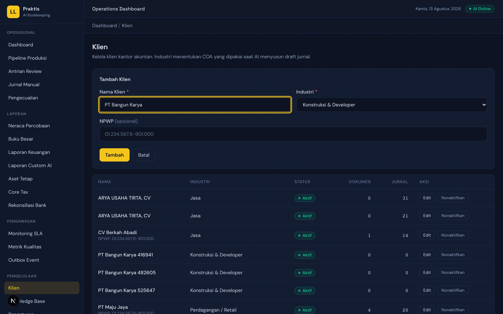
Gambar 2 · Form klien dengan dropdown industri (17 opsi).
Daftar Klien & Sortir
Halaman Klien menampilkan daftar klien firma; gunakan pencarian untuk menemukan klien cepat. Setiap klien punya halaman detail berisi profil, COA, subledger, dan laporan.
Bagian 4
COA Template per Industri
Praktis menyediakan 17 template Chart of Accounts: Retail, Jasa, F&B, Manufaktur, Konstruksi & Developer (PSAK 72), Properti, Hotel & Pariwisata, Kesehatan, Pendidikan, Koperasi (SHU), Yayasan/Nirlaba (ISAK 35), Agrikultur (PSAK 69), Transportasi, Teknologi, Fintech (Escrow), Event, dan Lainnya.
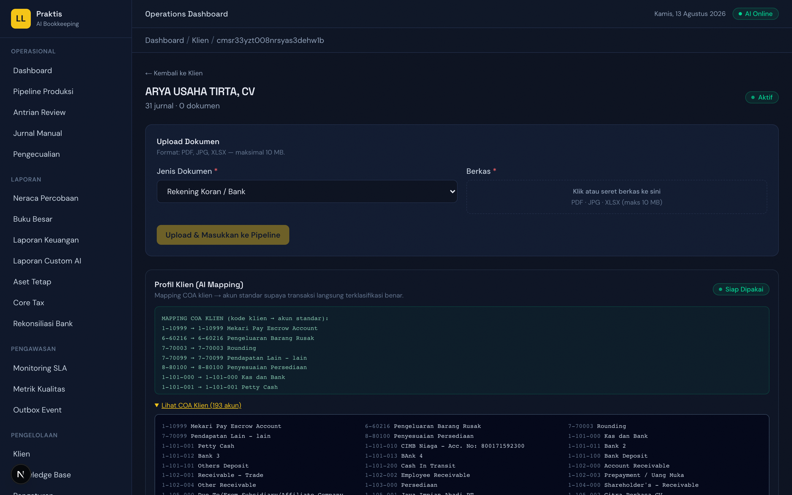
Gambar 3 · Halaman klien — panel "Lihat COA Klien (n akun)" menampilkan akun hasil template (contoh: 193 akun hasil import ASC_2026).
- Buka halaman detail klien.
- Klik Lihat COA Klien (n akun) untuk membuka daftar kode & nama akun.
- COA dipakai AI untuk mengklasifikasi dokumen sejak hari pertama — tidak perlu menunggu "pembelajaran".
Template berisi ±41 akun umum + akun khas industri (mis. konstruksi: Piutang Termin, Retensi, Contract Liability; koperasi: Simpanan Pokok/Wajib/Sukarela, SHU).
Bagian 5
Import Kertas Kerja Excel
Wizard Import Kertas Kerja memigrasi data dari file Excel kertas kerja akuntan (mis. format ASC_2026) menjadi klien lengkap: COA, saldo awal, dan jurnal historis — tanpa menulis ulang manual.
Langkah 1 — Upload
- Buka halaman Klien.
- Klik tombol Import Kertas Kerja.
- Pilih file Excel (
.xlsx) — drag & drop atau klik untuk memilih.
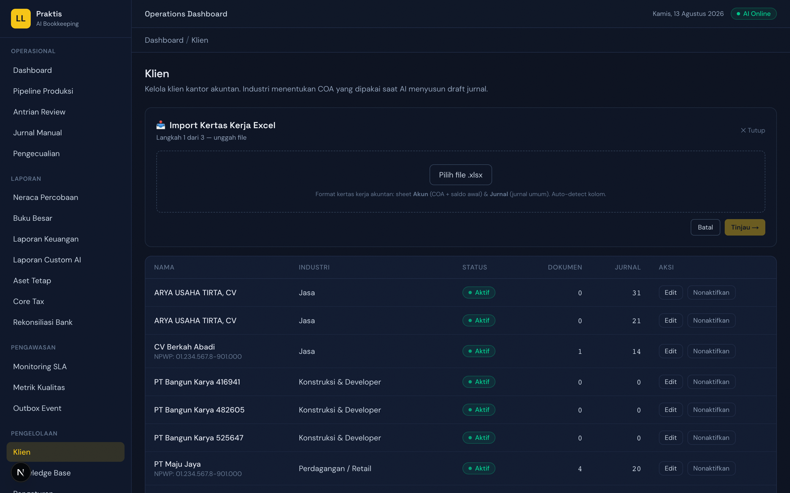
Gambar 4 · Wizard Import — langkah 1: upload file kertas kerja Excel.
Langkah 2 — Preview
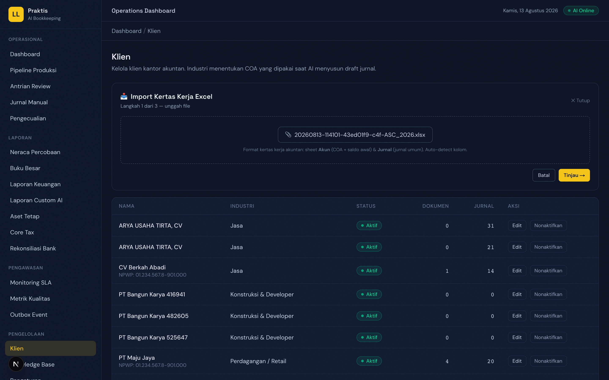
Gambar 5 · Preview: COA terdeteksi (contoh 193 akun), jurnal ter-parse, peringatan ditampilkan transparan.
- Periksa jumlah akun COA dan baris jurnal yang terdeteksi.
- Perhatikan peringatan: jurnal yang tidak balance per bukti akan diimpor sebagai agregat bulanan (label "Agregat YYYY-MM (kertas kerja)").
- Pastikan kolom saldo awal terbaca benar (debit/kredit dinormalisasi otomatis).
Langkah 3 — Import
- Klik Import — sistem membuat Client + COA mapping + jurnal opening + jurnal historis (status APPROVED).
- Buka klien baru → cek Trial Balance periode yang memuat data: harus seimbang (total debit = kredit).
Sheet Kode pada kertas kerja otomatis menjadi master subledger (CT→Pelanggan, AP→Pemasok, SH→Pemegang Saham) lengkap dengan saldo awal.
Jurnal asli yang tidak memakai kode bantu akan tampil tanpa kode subledger — aging baru terisi bila data memuat kode bantu.
Bagian 6
Subledger & Aging Piutang
Modul buku besar pembantu menyediakan master kode bantu (Pelanggan, Pemasok, Pemegang Saham, Lainnya) dan aging piutang 4 bucket: Current · 31–60 hari · 61–90 hari · 90+ hari. Saldo dihitung langsung dari jurnal — tidak ada sistem paralel yang bisa selisih.
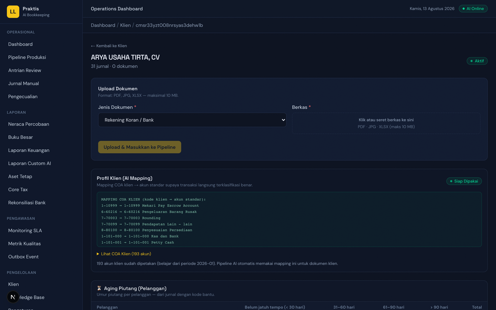
Gambar 6 · Subledger & Aging — tabel aging 4 bucket + master kode bantu (bucket 90+ ditandai merah).
Menggunakan
- Buka halaman detail klien → bagian Aging Piutang / Subledger.
- Filter master berdasarkan tipe (Pelanggan / Pemasok / Pemegang Saham / Lainnya).
- Tambah master manual bila perlu (kode unik per klien).
- Klik baris kode bantu → Buku Besar Pembantu menampilkan seluruh transaksi + running balance.
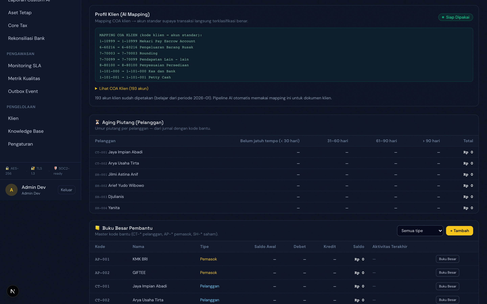
Gambar 7 · Buku Besar Pembantu — invoice, pembayaran, dan running balance per kode bantu.
Kolom Kode Bantu di jurnal menentukan subledger. Pada import kertas kerja, kolom kode bantu jurnal otomatis dipetakan ke dimension.subledgerCode.
Bagian 7
Laporan — Ikhtisar (Tahunan / Bulanan)
Tab Ikhtisar di Laporan Keuangan menampilkan ringkasan multi-periode dengan dua mode:
| Mode | Tampilan | Kegunaan |
|---|
| Tahunan (default) | 5 tahun berdampingan | Trend jangka panjang, rasio GPM/OPM/NPM/ROA/ROE |
| Bulanan | 12 kolom Jan–Des dalam tahun aktif | Pola kertas kerja akuntan (1-12), musiman |
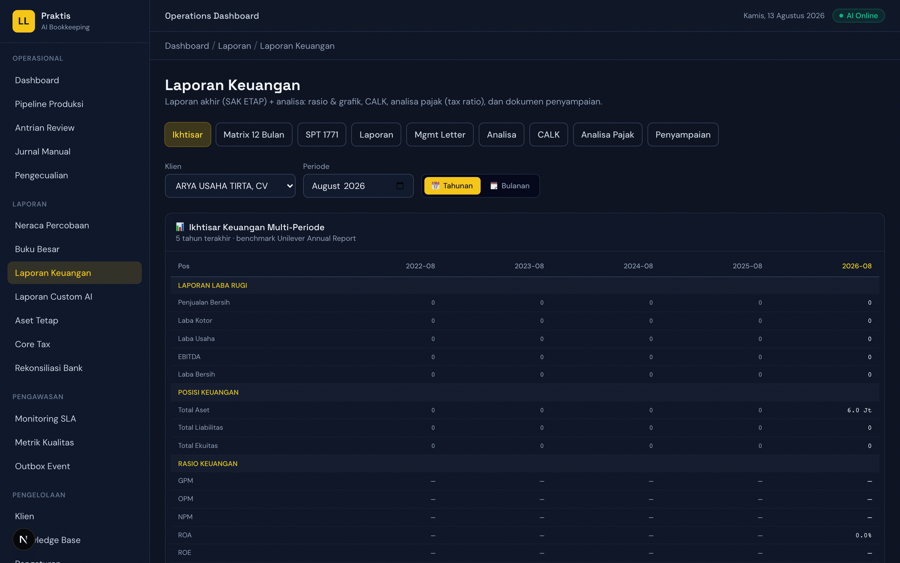
Gambar 8 · Ikhtisar mode Bulanan — 12 kolom Jan–Des lengkap dengan rasio.
- Buka Laporan Keuangan → Ikhtisar.
- Pilih klien.
- Toggle Tahunan / Bulanan sesuai kebutuhan; pada mode bulanan pilih tahun pada input periode.
- Tabel ikhtisar & grafik menyesuaikan mode secara otomatis.
Bagian 8
Laporan — Matrix 12 Bulan
Tab Matrix 12 Bulan menyajikan dua tabel persis pola kertas kerja LR/NRC (1-12):
- Laba Rugi per Bulan — transaksi bulan berjalan (non-kumulatif) + kolom Total setahun.
- Neraca Posisi Akhir Bulan — kumulatif Januari–bulan berjalan, laba YTD masuk ekuitas, sehingga aset = liabilitas + ekuitas di setiap kolom.
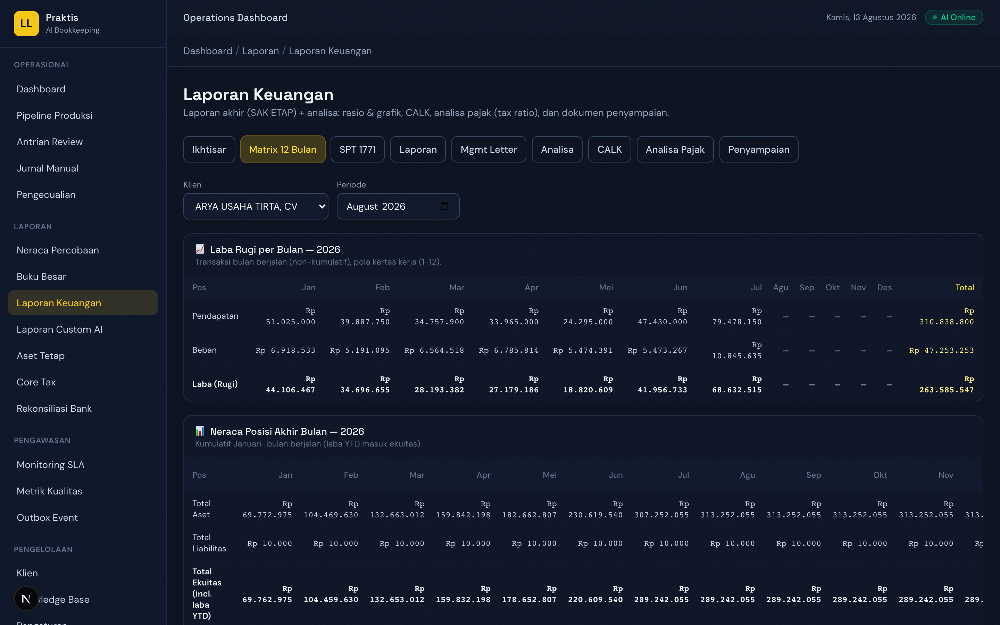
Gambar 9 · Matrix 12 Bulan — LR per bulan (Jan–Des + Total) dan Neraca posisi akhir bulan.
- Buka Laporan Keuangan → Matrix 12 Bulan.
- Pilih klien & tahun (input periode).
- Baca kolom per bulan; kolom Total (LR) / Des (Neraca) = akumulasi setahun.
Bagian 9
Laporan — Laba Rugi, Neraca, Perubahan Ekuitas
Tab Laporan menyediakan 4 jenis laporan akhir format Indonesia (SAK ETAP) yang dihitung dari jurnal APPROVED/FINALIZED: Laba Rugi, Neraca, Perubahan Ekuitas, Arus Kas.
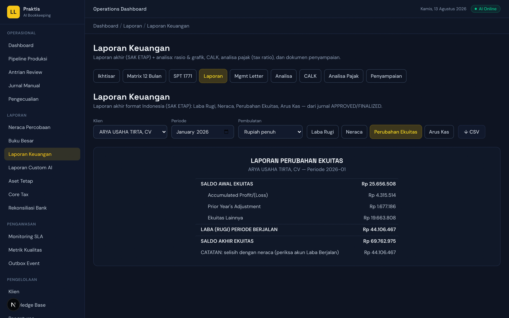
Gambar 10 · Perubahan Ekuitas — Saldo Awal → Setoran Modal → Laba → Prive → Saldo Akhir (terkunci dengan neraca).
- Buka Laporan Keuangan → Laporan.
- Pilih klien & periode (format
YYYY-MM).
- Klik tab jenis laporan: Laba Rugi / Neraca / Perubahan Ekuitas / Arus Kas.
- Gunakan tombol CSV untuk export.
Perubahan Ekuitas (EQ v2): saldo awal tidak lagi menghitung ulang laba berjalan (anti dobel hitung); setoran modal & prive terdeteksi otomatis dari jurnal; bila ada selisih dengan neraca muncul baris catatan.
Bagian 10
Pembulatan Laporan (Rounding Engine)
Dropdown Pembulatan di tab Laporan menyajikan angka dalam satuan lebih ringkas (SAK ETAP par. 24):
| Opsi | Contoh tampilan |
|---|
| Rupiah penuh | Rp 51.313.016 |
| Ribuan (Rp'000) | Rp 51.313 |
| Jutaan (Rp'000.000) | Rp 51 |
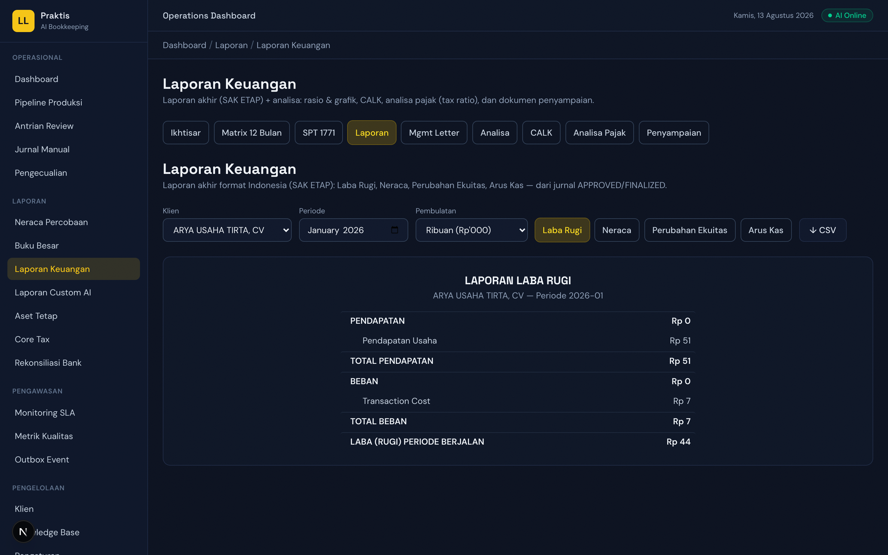
Gambar 11 · Pembulatan Ribuan — LABA = TOTAL PENDAPATAN − TOTAL BEBAN tetap konsisten (tidak ada selisih Rp1).
- Buka Laporan → pilih klien & periode.
- Pilih mode pembulatan pada dropdown Pembulatan.
- Semua baris akun dibulatkan; baris total dihitung ulang dari baris yang dibulatkan sehingga total = Σ baris.
- Export CSV mengikuti mode pembulatan yang aktif.
Bagian 11
SPT 1771 & Koreksi Fiskal
Tab SPT 1771 menyusun rekonsiliasi fiskal tahunan lengkap dengan kolom koreksi yang bisa diedit:
- Lampiran I — Rekonsiliasi Fiskal: per akun Komersial → Koreksi + → Koreksi − → Fiskal; koreksi otomatis dari heuristik (beban pajak/denda/entertainment, pendapatan final) dan bisa diubah manual.
- Lampiran II — Penyusutan & Amortisasi: komersial vs fiskal per aset (kelompok K1–K4/BP).
- Lampiran III — Perhitungan PPh: tarif UU HPP (22% 2020–2022, 20% 2023+), fasilitas Pasal 31E, PP 23/2018 (0,5%), kredit pajak, kurang/(lebih) bayar.
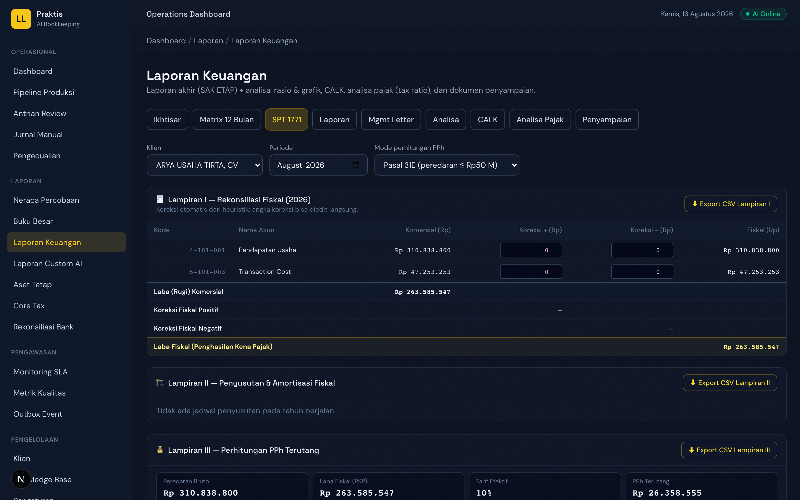
Gambar 12 · SPT 1771 — Lampiran I rekonsiliasi fiskal: kolom koreksi editable, Laba Fiskal dihitung ulang live.
- Buka Laporan Keuangan → SPT 1771.
- Pilih klien & tahun.
- Pilih mode perhitungan: Pasal 31E / PP 23 / Normal.
- Edit kolom Koreksi + / − sesuai penyesuaian fiskal (nilai fiskal ter-update otomatis).
- Klik Export CSV per lampiran (format Excel Indonesia).
Lampiran IV (kompensasi kerugian) & V (struktur permodalan) belum tersedia di versi ini.
Bagian 12
Antrian Kerja & Filter Klien
Modul kerja (Queues, Exceptions, Outbox) kini mendukung sortir per klien agar tim fokus pada satu klien pada satu waktu.
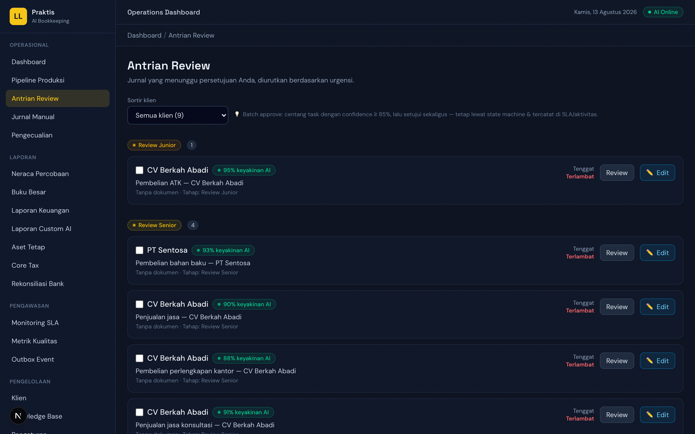
Gambar 13 · Queues — dropdown filter klien (contoh: ARYA USAHA TIRTA, CV).
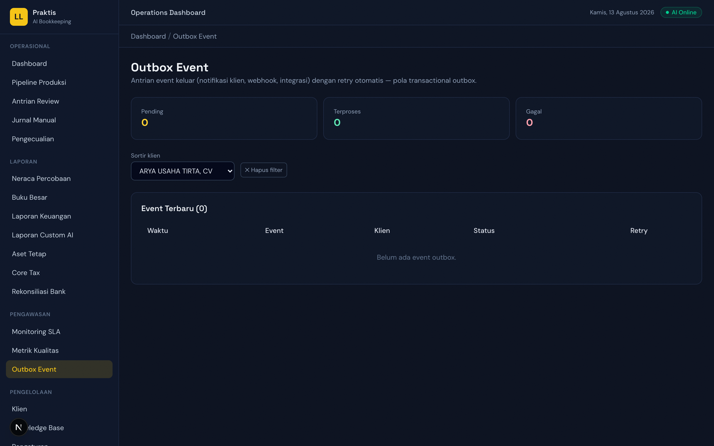
Gambar 14 · Outbox — filter klien (server-side) untuk melihat item kiriman per klien.
- Buka Queues / Exceptions — filter klien di bagian atas daftar.
- Buka Outbox — pilih klien dari dropdown; daftar item langsung tersaring.
- Pilih "Semua klien" untuk kembali ke tampilan penuh.
Bagian 13
Tips, Batasan & Referensi
Tips Penggunaan
- Selalu pilih periode yang memuat data — laporan bersifat per periode.
- Untuk data demo: klien ARYA USAHA TIRTA, CV (import ASC_2026) memiliki 193 akun COA, 8 subledger, dan jurnal balance Rp 336.981.340; aging terisi lewat seed demo (CT-001 Rp 7 jt, CT-002 Rp 5 jt).
- Gunakan Pembulatan Ribuan untuk presentasi ringkas ke klien; Rupiah penuh untuk file kerja.
- Pada SPT 1771, koreksi otomatis hanyalah awalan — keputusan akhir tetap di tangan akuntan.
Batasan Versi Ini
- Lampiran IV/V SPT 1771 belum tersedia (butuh data kompensasi rugi & struktur modal).
- Multi-currency ditunda (kebijakan produk).
- Jurnal kertas kerja yang tidak balance per bukti diimpor sebagai agregat bulanan — detail per invoice hilang.
Referensi
| Topik | Sumber |
|---|
| Pemetaan laporan ke SPT 1771 | Knowledge Base: mapping-laporan-spt-1771 |
| COA per industri (18 model bisnis) | docs/riset-model-bisnis-coa.md |
| Penyusutan komersial vs fiskal | Knowledge Base: perlakuan-penyusutan-aset-tetap |
| Siklus kertas kerja Excel akuntan | Knowledge Base: siklus-kertas-kerja-excel-akuntan |